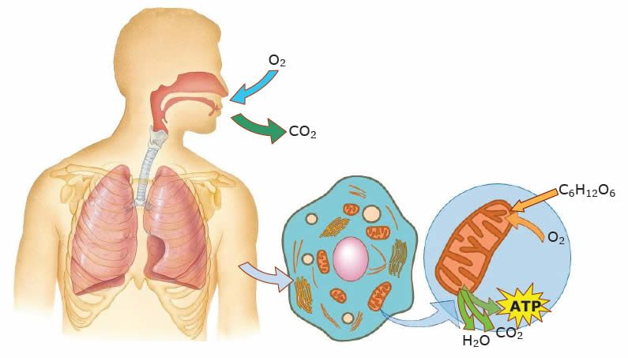
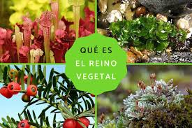
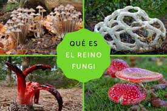
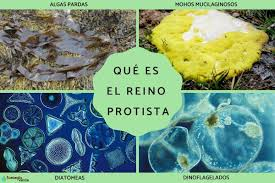
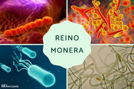
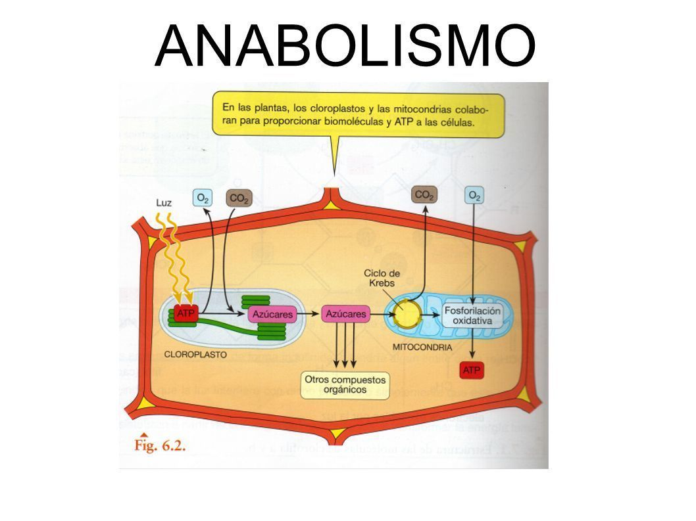
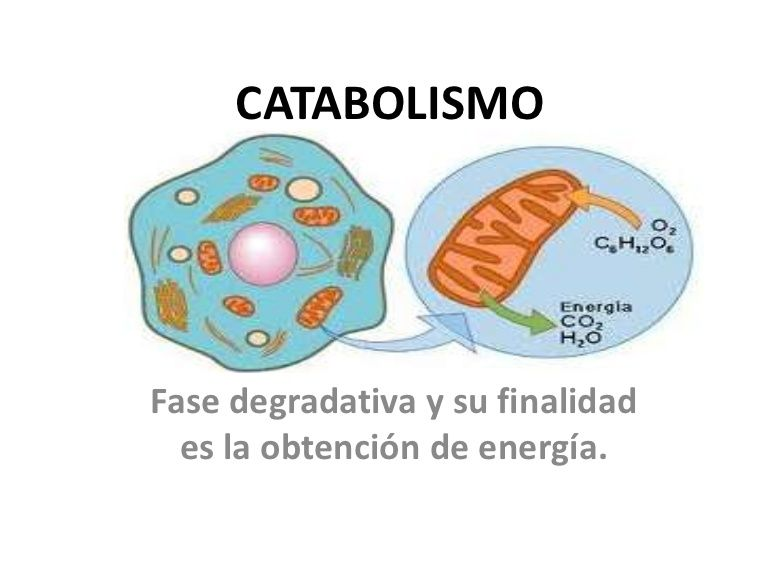

Respiración Celular
¿Qué es?
La respiración Celular es un proceso fundamental para la vida en el que las células degradan moléculas orgánicas (principalmente glucosa) para obtener energia en forma de ATP (adenosin trifosfato), que es la "moneda energética" que utilizan las células para realizar todas sus funciones vitales.
Tipos
Se divide en:
Respiración Anaeróbica
Es el proceso por el cual las células degradan la glucosa en ausencia de oxígeno para producir una menor cantidad de ATP. En este caso, el aceptor final de electrones no es el oxígeno, sino otra molécula orgánica o inorgánica.
Respiración Aeróbica
Es el proceso por el cual las células degradan la glucosa y otras moléculas orgánicas en presencia de oxígeno para producir una gran cantidad de ATP. El oxígeno actúa como el aceptor final de electrones.

Diferencias
mientras que la respiración aeróbica es la forma más eficiente de obtener energía a largo plazo y requiere oxígeno, la respiración anaeróbica es una estrategia de emergencia o adaptación para producir ATP rápidamente en ausencia de oxígeno, aunque con un rendimiento energético mucho menor.
Mas información
Los Reinos de la Vida
¿Qué es?
Los seres vivos se agrupan en 5 reinos biológicos según sus características celulares, formas de nutrición y organización.
Se dividen en:
Animalia (Animales):
Organismos multicelulares, eucariotas, que se alimentan de otros seres vivos (heterótrofos) y tienen la capacidad de moverse.

Plantae (Plantas):
Organismos multicelulares, eucariotas, que producen su propio alimento a través de la fotosíntesis (autótrofos).
Fungi (Hongos):
Organismos, a menudo multicelulares, que se alimentan absorbiendo nutrientes del entorno (heterótrofos) y tienen paredes celulares hechas de quitina.
Protista:
Un reino diverso que incluye organismos unicelulares eucariotas y algunos multicelulares simples, como algas y protozoos.
Monera:
Este reino incluye organismos procariotas, como bacterias y arqueas, que son unicelulares y no tienen núcleo definido.
Más información
ADN y ARN
Función
ADN
ADN y ARN
Función
ADN
Contiene las instrucciones genéticas para el desarrollo y funcionamiento de los organismos vivos.
ARN
Participa en la síntesis de proteínas.
Estructura
ADN
Doble hélice. Compuesto por nucleótidos: adenina (A), timina (T), citosina (C) y guanina (G).
ARN
Cadena simple. Tiene uracilo (U) en lugar de timina.
Ubicación
ADN
Núcleo celular y mitocondrias
ARN
Se encuentra principalmente en el núcleo y el citoplasma de las células, tanto procariotas como eucariotas.
Más información
Fotosíntesis
¿Qué es?
La fotosíntesis es un proceso químico por el cual las plantas, algas y algunas bacterias convierten la energía solar en energía química (glucosa).
Fórmula química:
6CO2 + 6H2O + LUZ → C6H12O6 + 6O2
Fases:
1. Fase luminosa:
Ocurre en los tilacoides.
Se capta energía solar para formar ATP y NADPH.
2. Fase Oscura:
Ocurre en el estroma.
Se utiliza el CO₂ y la energía acumulada para formar glucosa.
Más información
Fases y Tipos de Metabolismos
¿Qué es el metabolismo?
Es el conjunto de reacciones químicas que ocurren dentro de las células para mantener la vida.
Tipos:
Anabolismo:
Reacciones que construyen moléculas complejas a partir de otras más simples (requieren energía).
Catabolismo:
Reacciones que degradan moléculas complejas para liberar energía.
Fases metabólicas:
1. Ingestión y absorción de nutrientes.
2. Transformación en energía o materiales.
3. Eliminación de residuos.
Más información
Célula Animal
Características:
Eucariota (con núcleo y orgánulos).
Sin pared celular ni cloroplastos.
Tamaño entre 10 y 30 micras.
Organelos importantes:
Núcleo:
Contiene el ADN.
Mitocondrias:
Centro de producción de energía.
Lisosomas:
Contienen enzimas digestivas.
Ribosomas:
Fabrican proteínas.
Retículo endoplásmico:
Transporte de sustancias.
Aparato de Golgi:
Empaque y distribución de proteínas.
Funciones:
Realiza todas las funciones vitales del organismo: nutrición, reproducción, respiración, excreción, entre otras.
Más información
Célula Vegetal
Características:
Eucariota (con núcleo y orgánulos).
Con pared celular (rígida, de celulosa, da soporte y protección).
Con cloroplastos (para la fotosíntesis)
Tamaño generalmente entre 10 y 100 micras (a menudo más grandes que las animales).
Organelos importantes:
Núcleo:
Contiene el ADN.
Mitocondrias:
Centro de producción de energía.
Cloroplastos:
Realizan la fotosíntesis (convierten la energía lumínica en alimento).
Gran vacuola central:
Almacena agua, nutrientes, desechos y mantiene la turgencia celular.
Ribosomas:
Fabrican proteínas.
Retículo endoplásmico:
Transporte de sustancias.
Aparato de Golgi:
Empaque y distribución de proteínas.
Pared celular:
Capa externa rígida de celulosa que proporciona soporte y protección.
Funciones:
Realiza todas las funciones vitales del organismo: nutrición (a través de la fotosíntesis) , reproducción, respiración, excreción, soporte estructural y almacenamiento.